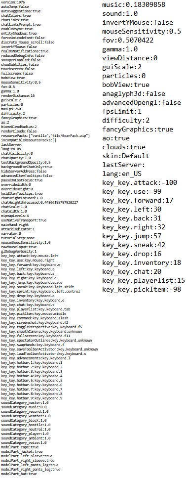

Chances are, if you've tried to launch Minecraft 1.2.1, you've seen this screen. How do you fix this? Well, there are a few options. The actual error is caused by older versions of Minecraft trying to load the options.txt file that was made by modern versions.
Comparison between old and new options.txt. New is on the left:
Ok, so how do you fix it? You can either rename options.txt to options_new.txt and launch the game. When you want to play new versions rename the one 1.2.1 made to options_old.txt and rename options_new.txt to options.txt and vice versa.
The second options is to use MultiMC and make its own instance, and thus its own options.txt. You can download the official MultiMC instance on the downloads page.